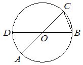

Авторский разбор и аудит предварительны; внешней экспертизы нет.
Модель автора: claude-opus-5-5 (opus; effort=low); в основных частотах: True ·
Впишите правильный ответ.
|  |
КЭС: 7.1 Фигуры на плоскости
82
| ID / вход | Действие | Результат | Локальные KC |
|---|---|---|---|
| s1 · condition | Найти центральный угол AOB как смежный с углом AOD, поскольку D, O, B лежат на диаметре BD | ∠AOB = 180° − 16° = 164° | kc1 |
| s2 · s1, condition | Найти вписанный угол ACB, опирающийся на ту же дугу AB (не содержащую C), что и центральный угол AOB | ∠ACB = 164°/2 = 82° | kc2 |
[
{
"id": "m1",
"name": "Через центральный угол, смежный с данным",
"step_ids": [
"s1",
"s2"
]
}
]По известному углу, одна сторона которого продолжается в противоположном направлении прямой (диаметра), найти смежный угол как дополнение до 180°.
{
"local_kc_id": "kc1",
"status": "uncertain",
"catalog_kc_id": null,
"evidence": [
{
"ref": "step:s1:action",
"quote": "Найти центральный угол AOB как смежный с углом AOD, поскольку D, O, B лежат на диаметре BD"
},
{
"ref": "step:s1:result",
"quote": "∠AOB = 180° − 16° = 164°"
}
],
"context_refs": [
"condition",
"image:assets/857ad77d8224b28456ec4706.png"
],
"alternatives_checked": [
{
"catalog_kc_id": "literal_f5a787e19d0e",
"reason": "Определение объединяет сумму углов треугольника и смежность; в шаге наблюдается только смежность, сумма углов треугольника не используется. Кандидат совпадает лишь с частью узла."
},
{
"catalog_kc_id": "literal_adbf18f11761",
"reason": "Вычитание известного угла из развёрнутого угла с общей стороной OA также подходит под 'вычесть или сложить известные углы с общей стороной'; перекрывается с literal_f5a787e19d0e."
}
],
"rationale": "Операция: найти смежный угол как 180° минус данный, опираясь на то, что D, O, B лежат на одной прямой (диаметр BD из условия и рисунка). Действие корректно. Два перекрывающихся узла каталога покрывают его частично (смежность как компонент составного узла и общее сложение/вычитание углов с общей стороной), основания выбрать один нет.",
"proposal": null,
"blocking": false,
"issue_ids": []
}По центральному углу, опирающемуся на ту же дугу, что и вписанный угол, найти вписанный угол как половину центрального; применимо, когда вершина вписанного угла не лежит на этой дуге.
{
"local_kc_id": "kc2",
"status": "new_candidate",
"catalog_kc_id": null,
"evidence": [
{
"ref": "step:s2:action",
"quote": "Найти вписанный угол ACB, опирающийся на ту же дугу AB (не содержащую C), что и центральный угол AOB"
},
{
"ref": "step:s2:result",
"quote": "∠ACB = 164°/2 = 82°"
}
],
"context_refs": [
"step:s1:result",
"image:assets/857ad77d8224b28456ec4706.png"
],
"alternatives_checked": [
{
"catalog_kc_id": "diameter_angle",
"reason": "Частный случай вписанного угла, опирающегося на диаметр (90°); здесь дуга AB не полуокружность, общий закон половины центрального угла не покрывается."
},
{
"catalog_kc_id": "isosceles_angles",
"reason": "Альтернативный путь через равнобедренный треугольник OCB возможен, но в решении не наблюдается."
}
],
"rationale": "Операция: по центральному углу AOB=164° найти вписанный угол ACB, опирающийся на ту же дугу, как половину центрального. По рисунку C лежит на верхней дуге рядом с B, дуга AB, соответствующая углу AOB=164° (нижняя, не содержащая D), не содержит C — условие применимости выполнено. В каталоге нет узла о связи вписанного и центрального углов в общем виде.",
"proposal": {
"name": "Связывать вписанный угол с центральным по общей дуге",
"definition": "Установить, что вписанный и центральный углы опираются на одну и ту же дугу (вершина вписанного угла вне этой дуги), и выразить вписанный угол как половину центрального или центральный как удвоенный вписанный."
},
"blocking": false,
"issue_ids": []
}[]
[]
{
"author_path": "data/annotation/runs/2026-11-09-fipi-team-bogdan108-next-100/raw/author/BC72B9.json",
"auditor_path": "data/annotation/runs/2026-11-09-fipi-team-bogdan108-next-100/raw/auditor/BC72B9.json",
"accepted_after_review": null
}